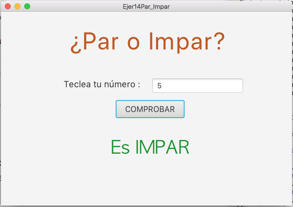
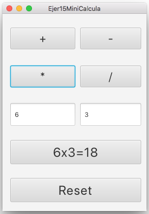
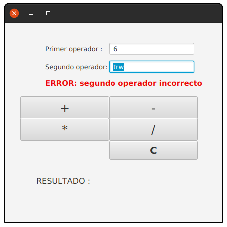
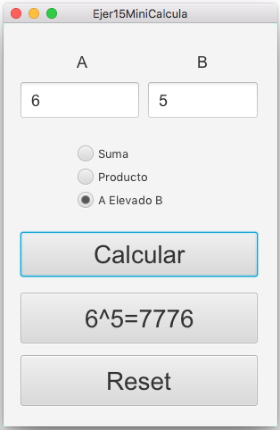
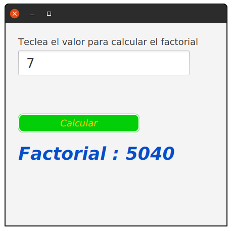
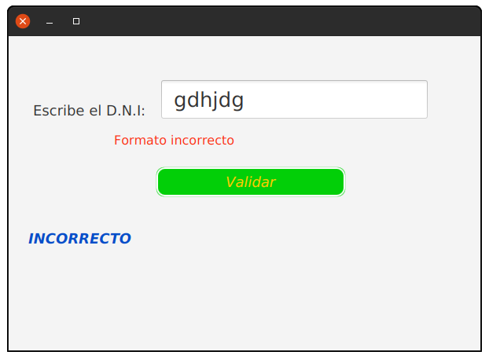
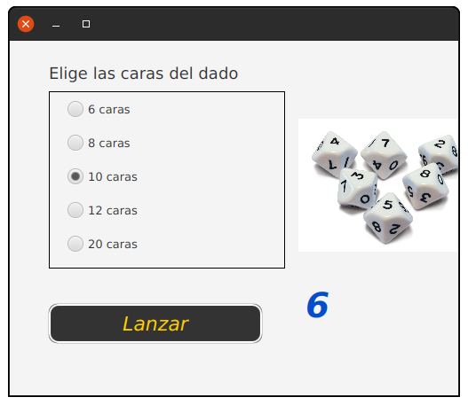
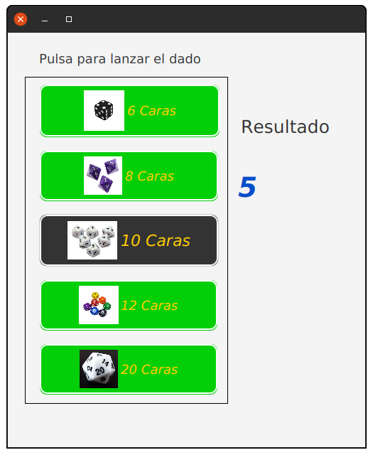
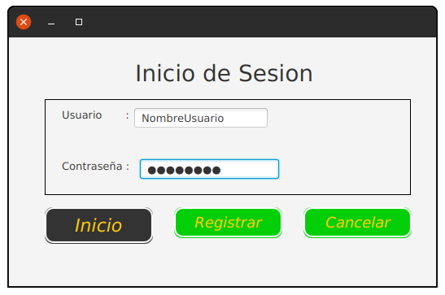

Implementa las aplicaciones gráficas siguiendo las especificaciones de diseño y funcionalidad descritas en cada ejercicio. Ten en cuenta lo siguiente:
- Los aspectos del diseño que no se describan quedan a tu elección. En todo caso, intenta que la interfaz sea sencilla de utilizar para el usuario.
- Renombra todos los componentes para que se entienda su uso. En lugar de TextField1, Button1 y Label1 es mejor utilizar abreviaturas: txtEdad, btnSuma y lblRes.
- Valida la información introducida por el usuario y avisale en caso de error.
- Maneja las posibles excepciones que puedan producirse.
- Puedes implementar clases adicionales si lo consideras oportuno.
Ejercicio – ¿Par o impar?
Aplicación gráfica que permita introducir un número entero y luego saber si dicho número es par o impar. Utiliza un TextField para introducir el valor, un Button con el texto “¿par o impar?” y un Label para mostrar “PAR” o “IMPAR” según el caso.
Por ejemplo, no tiene por qué ser igual, podríamos añadir un botón para borrar el número:

Ejercicio – Mini calculadora I
Aplicación gráfica que permita introducir dos números reales y calcular el resultado de su suma, resta, multiplicación o división. Utiliza un Button distinto para cada operación y un único Label para mostrar el resultado.
Por ejemplo, puede ser distinto:

Ejercicio – Mini calculadora II
Aplicación gráfica que permite introducir dos números enteros (A y B) y permita realizar tres cálculos distintos: suma de A y B, producto de A x B y exponencial A^B (A elevado a B). Utiliza tres RadioButton (uno para cada cálculo) y un botón “¡Calcular!”.

Ejercicio - Factorial
Aplicación de uso de JavaFX con FXML y controlador para calcular el factorial de un número.
Modificación: usando una hoja de estilos llamada desde el objeto Scene.

Ejercicio – Validar letra NIF
Aplicación gráfica que permita introducir un NIF (8 números y una letra) e indique si la letra de dicho NIF es válida.

Ejercicio – Dados de Rol
Aplicación gráfica que permita al usuario simular que lanza un dado de juegos de rol. Podrá elegir entre dado de 6 caras (de 1 a 6), dado de 8 caras (de 1 a 8), dado de 10 caras (de 1 a 10), dado de 12 caras (de 1 a 12) y dado de 20 caras (de 1 a 20). Utiliza un botón distinto para cada tipo de dado. Muestra en cada botón una imagen de cada dado. Puedes encontrar las imágenes fácilmente haciendo una búsqueda en Internet.
Por ejemplo:

Ejercicio – Inicio de sesión
Aplicación gráfica que simule una ventana de inicio de sesión y registro de usuarios. El usuario podrá introducir su nombre de usuario, contraseña (PasswordField) y hacer click en un botón de “Iniciar sesión”. Muestra el resultado del intento de inicio de sesión en un Label.
Los usuarios registrados y sus contraseñas estarán en el archivo ‘users.txt’. Crea unos pocos usuarios de ejemplo para probar la aplicación. No está permitido utilizar espacios ni en los nombres de usuario ni en las contraseñas.

Extra: Añade un botón “Crear usuario” que registre un nuevo usuario.
CASO PRÁCTICO – BURGER MENU APP
Implementa una aplicación gráfica que simule una aplicación de pedidos de menús de hamburguesas. La aplicación permitirá configurar un solo menú. El usuario podrá elegir el tipo de hamburguesa, pan, patatas y bebida. También hay elementos opcionales/extra.
El precio de un menú básico es de 8 euros pero algunas opciones tienen un coste adicional. Se mostrará el precio total del menú con las opciones elegidas, el IVA en € (21% adicional) y el precio de venta al público (tras sumar el IVA).
Las opciones obligatorias a elegir son:
Hamburguesa a elegir: pollo, cerdo, ternera (+1€) o vegana (+1€).
Pan a elegir: normal, integral o centeno.
Patatas a elegir: fritas, gajo y caseras (+1 €).
Bebida a elegir: refresco de cola, refresco de naranja, refresco de limón, agua y cerveza.
Las opciones extra/adicionales son:
Hamburguesa doble (+2 €).
Extra de queso (+0,50 €).
Extra de patatas (+1 €).
Salsas: ketchup, barbacoa, mostaza y thai. Pueden pedirse varias de cada (+0,50 cada una).
Reparto a domicilio (precio estándar) o recogida en el local (-20% sobre el precio final).